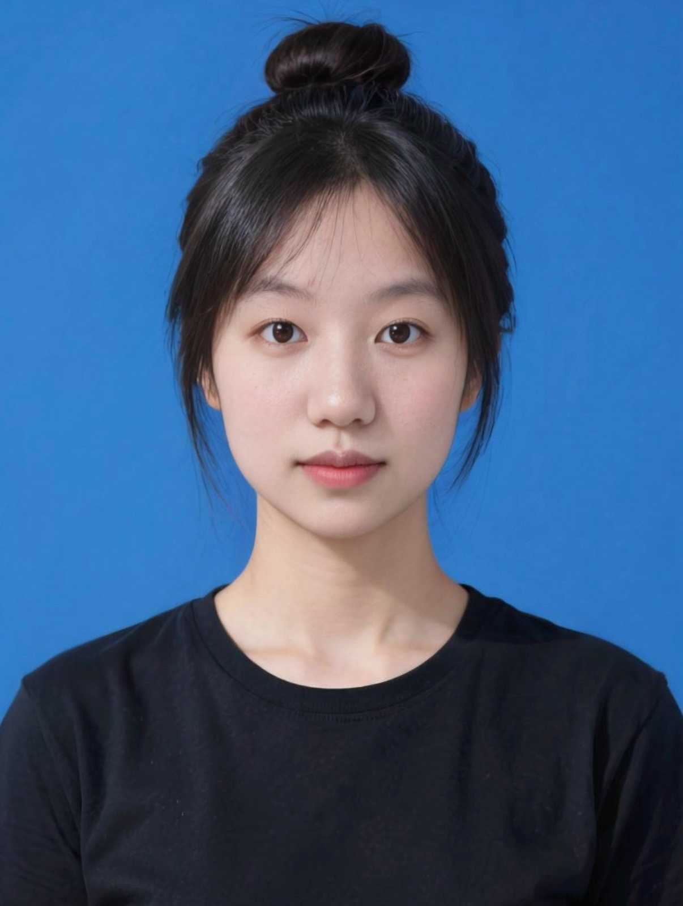
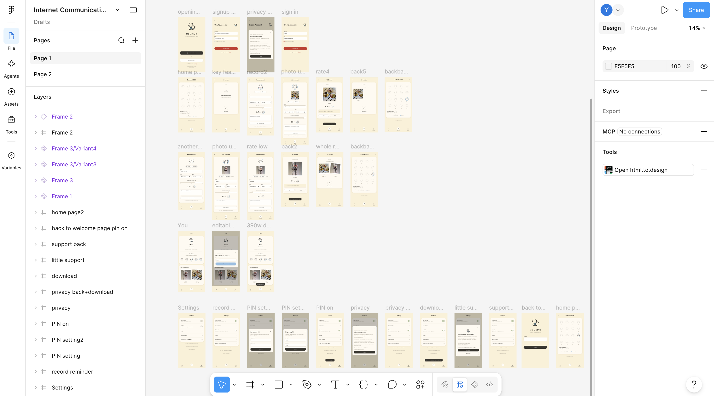

点击纸签查看
01 / ABOUT
墨尔本大学文学学士在读｜媒体与传播学、经济学双专业
课程实践涵盖平台研究、视觉分析、英文学术写作和交互原型设计。曾在木心美术馆与木心故居纪念馆担任志愿者，参与观众接待与现场协调。
代表项目包括小红书跨文化研究与互动展览，以及私人日常记录应用 MEMEMO。前者包含研究、互动网站、海报和展册，后者包含 Figma 界面设计与公开网页原型。个人创作包括中文随笔、意识流文本和音乐演出现场视频。
实习方向开放。首页风铃以手绘草图为基础设计。

02 / EDUCATION
2025 年 7 月至今｜文学学士（Bachelor of Arts） 双专业为媒体与传播学、经济学｜当前均分为 H1 档
媒体与传播学课程包括全球媒体（Understanding Global Media）、传播与社会变革、互联网传播、视觉传播与数字媒体。英文作业涵盖滴滴平台功能、小红书平台可供性、图像分析及反思写作。多项作业获得 H1，教师对选题、文章结构和论证深度给出积极反馈。
经济学课程包括微观经济学、宏观经济学和定量方法。选修方向还包括性别与文化、哲学议题。小红书跨文化展览为全球媒体课程项目。
2024 年 7 月至 2025 年 3 月｜GPA 9.4/10，排名第 1
课程成绩包括经济学 A+、商法 A+、计算机 A、会计 A、商科数学 A、管理学 A−、学术英语（人文方向）B+。经济学课程涵盖微观经济学与宏观经济学。计算机课程涵盖 Excel、Word 和 PowerPoint 的使用。
2022 年至 2025 年 6 月｜高中毕业
高中期间长期担任宣传委员，负责班级布置、运动会服装和戏剧表演物资。
2024 年 6 月离校，之后参加高中毕业考试，于 2025 年 6 月正式毕业。
2018–2022｜中考 686 分，全市前 150 名
曾担任学生校长，创办校园音乐电台，牵头策划、组织并落地植树节和观影活动，参与校园垃圾分类监督。长期担任班长或副班长，牵头组织毕业聚会、跨年晚会、生日会等班级活动。
2013–2018
曾担任学生校长，创办校园音乐电台，牵头策划、组织并落地校级义卖活动。
03 / PROJECTS & PRACTICE
2026 年第二学期｜Understanding Global Media｜五人小组项目
研究问题 2025 年 1 月，一批原本使用 TikTok 的海外用户进入小红书。项目关注新用户与原有用户如何在评论区交流、协商语言使用和社区参与方式。独立确定研究问题，搜集学术文献、帖文与评论、新闻和政策材料，并据此提炼核心论点。
研究与发现 选取五则公开帖子，结合正文、图片和可见评论进行定性细读。所选案例中，原有用户为新用户提供翻译建议，也表达了对使用中文和相互尊重的期待。展册以「猫税」为例，呈现社区成员如何用评论和象征性的「收据」回应新用户分享的猫咪照片。
项目分工 独立制作并部署互动网站，独立完成折页展册。网站按案例呈现俚语解释、翻译求助与语言使用期待，展册用「猫税」说明评论中的社区规范。负责 A0 海报的整体设计、排版与制作，左下角两个区块由组员放置。完成海报和展册印刷，撰写并整理全组英文讲稿，安排展示顺序并组织演练。课程导师对展示成果给予积极反馈。
查看互动网站 · 查看 A0 海报（PDF） · 查看折页展册（PDF）
2026 年第二学期｜独立制作｜Figma 界面与公开网页原型
设计思路 MEMEMO 是一款以日历为首页的私人日常记录应用原型。用户可添加照片、文字、心情和评分，也可按日期回看或补记过去的内容。
项目分工 独立完成功能规划、Figma 界面与交互设计、网页原型和公开部署。将日历、记录编辑和回看串成可操作的流程，并制作操作演示、设计分析报告与英文展示稿。
Figma 设计实证 设计画布展示了启动与注册、日历首页、照片上传与评分、记录回看、个人页，以及隐私和 PIN 设置等界面与状态。

2026 年 2 月 4 日至 2 月 27 日｜春节接待、观众服务与现场协调
接待工作 春节期间在两馆轮岗，参与讲解、值守与秩序维护，协助咖啡厅及纪念品店导购，并用英语向外籍游客说明物品寄存流程。
观众反馈 邀请游客填写调查问卷，汇总结果，并向行政馆长提出会员卡升级建议。
现场处理 遇到游客坚持拍摄手稿时，多次解释展品的拍摄规定并劝阻，随后与前台协调，制止违规拍摄。
志愿服务证明 木心美术馆于 2026 年 2 月 27 日出具盖章证明，确认 2026 年 2 月 4 日至 27 日在乌镇木心美术馆志愿服务，并在美术馆与故居纪念馆的不同岗位实践。查看志愿者证明
04 / SKILLS & WORK SAMPLES
完成平台功能、平台可供性、图像分析及反思类英文作业，多项获得 H1。
Safety by Design? Benefits and Hidden Costs of DiDi’s Female-Driver Priority
以滴滴「女司机优先」为例，结合 Type C 众包劳动分类、应用界面截图、学术文献和公开讨论，分析乘客偏好如何进入平台派单规则。论文指出，优先匹配可以回应女性乘客的安全顾虑，也可能为女司机带来额外订单。更远的接驾距离和乘客对额外照顾的期待，则可能增加女司机的时间、油费和情绪劳动成本。
Bridal Beauty Becomes a Cage: Visualizing Compulsory Femininity and Erased Subjectivity in Kiana Hayeri’s Photograph
以摄影师 Kiana Hayeri 在阿富汗喀布尔婚纱店拍摄的照片为对象，沿 Gillian Rose 的图像生产、画面、传播与观看框架展开分析。论文细读亮色婚纱、面部被遮盖且缺失双手的人台、密集的镜面反射，并结合照片的展出和观众反应，讨论画面的华丽与压迫感如何并存，以及它们如何指向塔利班治下女性公共可见性与主体性受到的限制。
可在全英环境中无障碍沟通，能够完成高分英文学术写作与流畅的英文口头展示。
负责研究内容的组织、展览材料的设计与印刷，以及现场展示流程安排。
小红书跨文化互动展览 将同一项研究制作成互动网站、A0 海报和折页展册。网站按案例呈现评论区互动，海报集中展示研究框架与发现，展册用「猫税」案例解释社区规范。互动网站 · 海报 · 展册
使用 Figma、Uizard 制作界面或交互原型，使用 Codex、Claude、Gemini 等工具辅助网页制作，并通过 GitHub 或国内平台部署。
作品 MEMEMO 从 Figma 界面做到可体验的网页原型，支持日常记录和按日期回看。圣诞树主题网页于 2025 年底使用 Gemini 辅助制作。查看 Figma 截图 · 体验 MEMEMO · 查看圣诞树网页
熟练使用 Excel 公式、图表与格式设置，以及 PowerPoint 和 Word。曾汇总木心美术馆游客问卷，并依据反馈提出建议。UNSW 商科预科 Advanced Computing 期末限时考试作品展示了 Excel 公式在预算和财务计算中的应用，以及用组合图对比月度支出与工资。查看 Excel 考试作品
初中和高中阶段均有作文多次入选年级范文。
小红书原创写作 分享随笔与意识流文本，累计获赞与收藏 6,473 次。查看小红书主页
完成音乐演出现场拍摄、剪辑与发布。作品发布于抖音、小红书和视频号。
演出现场视频 按简历整理时的数据，抖音账号有 1,000+ 位关注者，单条视频播放量通常为 1,000 至 25,000。观看演出现场视频
05 / CONTACT
项目、作品及实习相关沟通可通过以下方式联系。